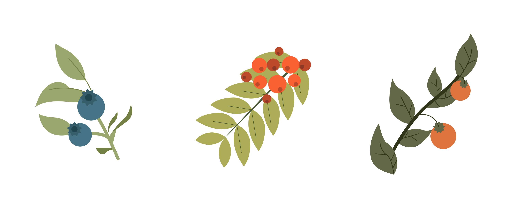
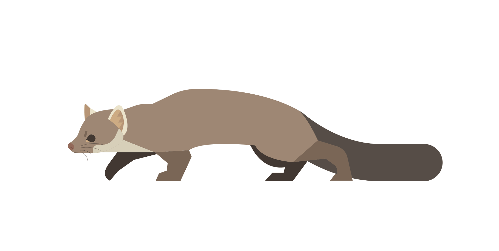

The Beech Marten has a pointier face than the Pine Marten, as well as rounder and shorter ears. This face structure makes them look more rodent-like. Beech martens have lighter and duller fur than Pine Martens, and instead of the signature yellow bib that other marten species have, they have a long white stripe on its neck, with brown spots. Its nose is also distinctively lighter, coming in shades of pink and gray. Like the Pine Marten, the Beech Marten has darker legs and tail, though its tail is slightly longer in proportion to its body.
Beech Martens are found all over Europe and Asia, ranging from Portugal to China. This particular species of marten inhabits more open landscapes and may also reside in urban structures. However, they are still known to inhabit conifer and deciduous forests. Although, compared to other marten species, they are also known for settling in more open landscapes, such as cliffs and fields.
Beech Martens, like other marten species, are omnivores, however, their diet contains a higher percentage of plants. Much of their diet has a diverse array of plants, such as blaeberries, wild tomatoes, and mountain ash. During the winter months when plants become more rare, Beech Martens do focus more on hunting, but because of their bolder nature, sometimes wander onto urban landscapes and target domestic animals.
While this isn't part of their diet, Beech Martens, due to being strangely confident around human structures, can be found settling in and chewing on cable wires for cars, becoming quite a nuisance for vehicle owners.
The Beech Marten has less fur on its paws and has shorter legs, affecting its movement patterns. While the Pine Marten moves in leaps and bounds, the Beech Marten moves more stealthily, more akin to a feline. Unlike the American and Pacific Marten, the Beech Marten are unable to properyl navigate through snow, instead relying on paths already made by other animals or people.
